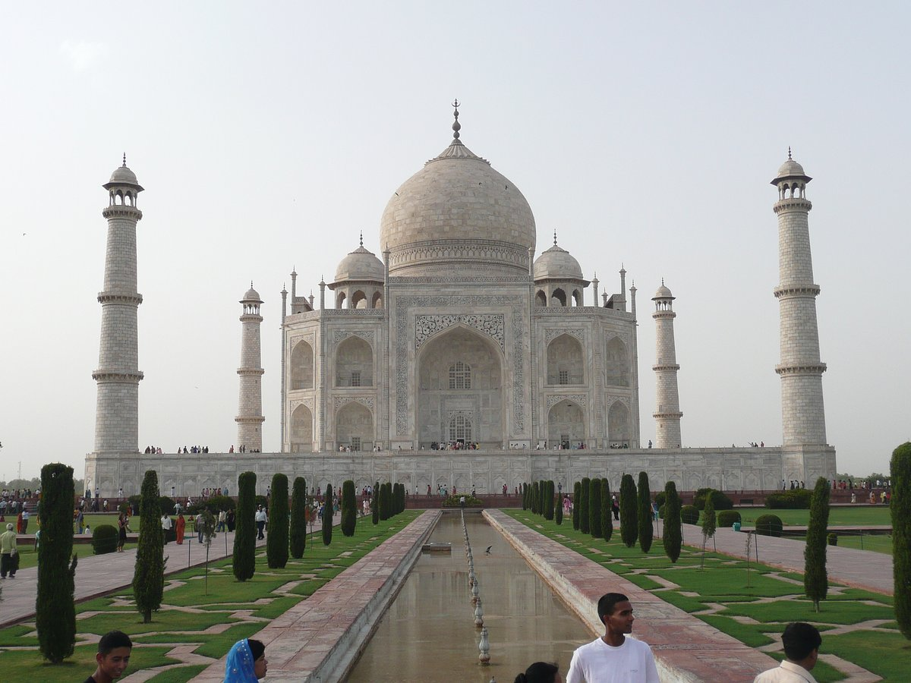
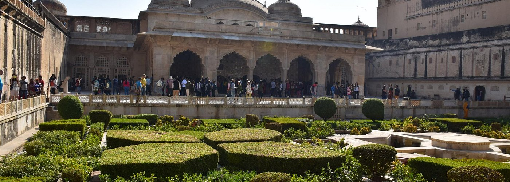
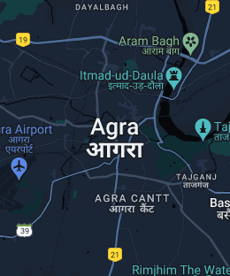
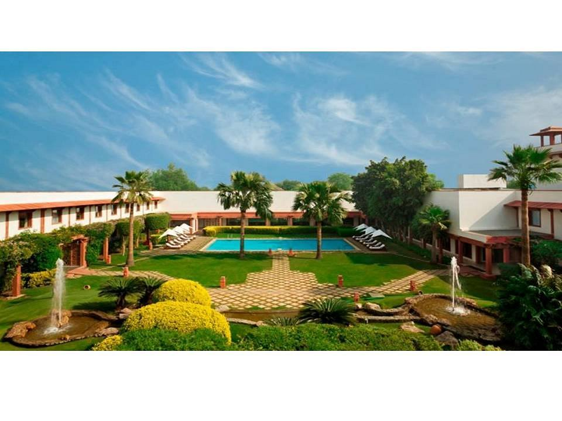
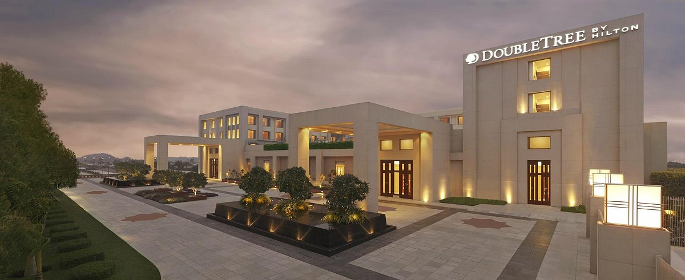
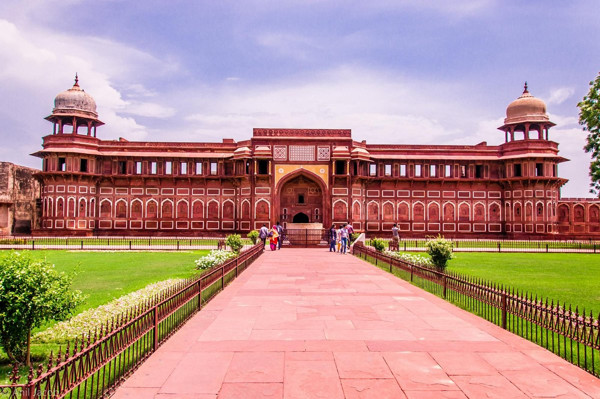
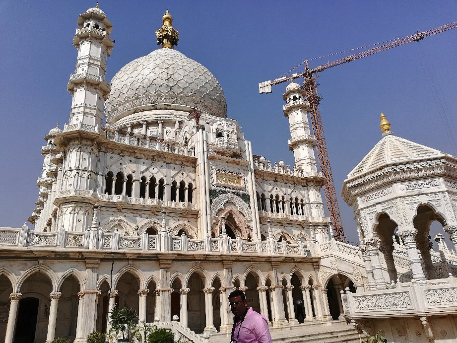

Agra is best known for the Taj Mahal (17th century), designated a UNESCO World Heritage site in 1983. A complex mausoleum, the Taj Mahal is often considered to be the world's best example of Mughal architecture. The Mughal emperor Shah Jahān built it for his favourite wife, Mumtāz Maḥal, in the mid-17th century..

Courtyard Agra
Retreat to Courtyard Agra. Enjoy easy access to Agra's legendary attractions, including the Taj Mahal, Fatehpur Sikri and Agra Fort, all just minutes away. After a busy day of sightseeing, unwind in the hotel spa or enjoy a dip in the sparkling outdoor pool. Visit the family-friendly Fun Zone to keep your little ones engaged or head to our innovative restaurants and bars to savor distinctive cuisines and crafted cocktails. With Marriott Bonvoy on Wheels, bring home the signature Marriott Dining experience in the comfort of your home and relish our exquisite flavors from our famous restaurants in the city.

Hotel Trident, Agra
The Trident, Agra, set amidst beautiful gardens, fountains, and landscaped central courtyards, is built of red stone reminiscent of the Mughal era. The hotel is only 1.5 kilometers away from one of the new 7 Wonders of the World, the Taj Mahal. The hotel derives up to 25% of its electricity needs from solar energy. The hotel is also equipped with an in-house Water Bottling Plant and Electric Vehicle Charging Station(s) for your everyday needs.

DoubleTree by Hilton Hotel Agra
WELCOME TO DOUBLETREE BY HILTON™, minutes away from the majestic Taj Mahal brings heart-warming experiences while you enjoy the rich culture of the city. An ideal hotel for family staycation, destination wedding or business trip, Enjoy the warm welcome with our DoubleTree Chocochip cookie before you witness the epitome of comfort and service unfold in front of your eyes. Thoughtfully decorated rooms with bespoke amenities offer unparalled views of the locality or the refreshing pool. Spend your day lazing around in the comfort of your room, strolling through the extensive lawns, taking a refreshing lap in the infinity pool, or rejuvenate at the Spa / Gymnasium after a long day of leisure. Allow our Chef’s to curate an exclusive menu for your special celebrations or simply enjoy the specialties of the region at Kebab E Que or North 27 and wind it up with a drink in the Plush Bar. With a round the clock In room Dining, there is always something available to satisfy your midnight cravings. Our Wedding experts are here to guide you and have your most important day unfold like a magic. Plan a lavish wedding or a business meeting and nothing is a hassle.Experience Signature Hilton Hospitality that blends warmth and professionalism to make your stay memorable while you take away fond memories of the Taj Mahal.

Taj Mahal
The Taj Mahal is located on the right bank of the Yamuna River in a vast Mughal garden that encompasses nearly 17 hectares, in the Agra District in Uttar Pradesh. It was built by Mughal Emperor Shah Jahan in memory of his wife Mumtaz Mahal with construction starting in 1632 AD and completed in 1648 AD, with the mosque, the guest house and the main gateway on the south, the outer courtyard and its cloisters were added subsequently and completed in 1653 AD. The existence of several historical and Quaranic inscriptions in Arabic script have facilitated setting the chronology of Taj Mahal. For its construction, masons, stone-cutters, inlayers, carvers, painters, calligraphers, dome builders and other artisans were requisitioned from the whole of the empire and also from the Central Asia and Iran. Ustad-Ahmad Lahori was the main architect of the Taj Mahal.

Agra Fort
Agra Fort, large 16th-century fortress of red sandstone located on the Yamuna River in the historic city of Agra, west-central Uttar Pradesh, north-central India. It was established by the Mughal emperor Akbar and, in its capacity as both a military base and a royal residence, served as the seat of government when the Mughal capital was in Agra. The structure, a contemporary of Humāyūn’s Tomb in Delhi (about 125 miles [200 km] to the northwest), reflects the architectural grandeur of the Mughal reign in India. The fort complex was designated a UNESCO World Heritage site in 1983.Situated on the site of earlier fortifications, it lies on the right bank of the Yamuna River and is connected to another of Agra’s renowned monuments, the Taj Mahal (downstream, around a bend in the Yamuna), by a swath of parkland and gardens. The fort was commissioned by Akbar in 1565 and reportedly took eight years to construct. The walls of the roughly crescent-shaped structure have a circumference of about 1.5 miles (2.5 km), rise 70 feet (21 metres) high, and are surrounded by a moat.

Dayal Bagh Temple
Dayal Bagh is not just a religious site but a self-sustained colony where residents lead an active, disciplined, and cooperative community life. Affiliated with the Radha Swami sect, the community follows spiritual ideals or leaders and contributes to social service through its various institutions. #Trivia: The Radhaswami Satsang Sabha, the chief working committee of the Radhaswami faith, plays a crucial role in guiding the community. According to the 2001 India census, Dayal Bagh had a population of 3324, with a balanced gender distribution. The community values its traditions, and residents actively participate in daily activities, including agricultural work. The area adjacent to the Dayal Bagh colony is known as Swami Bagh, which secures the Radha Swami temple and serves as the sacred tomb of Puran Dhani Swami Ji Maharaj, the founder and first leader of the Radha Swami faith..